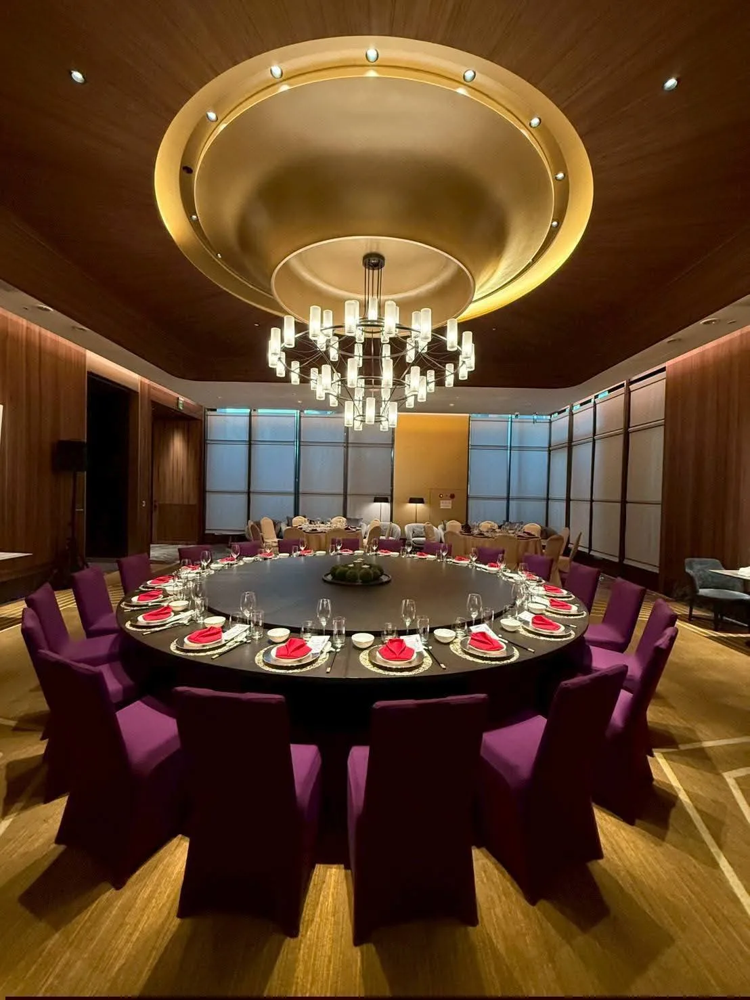

「高級私廚」跟「頂級私廚」這類形容詞在市場上沒有統一標準，價格高不代表規格真的到位。與其看形容詞，不如直接看三個具體標準。
真正的頂級私廚會使用可追溯、有明確等級認證的食材，例如日本A5和牛、生食級海鮮，而不是用「進口食材」這種模糊字眼帶過。
國際廚藝競賽獎項、知名餐廳工作經歷、專業證照，都是判斷主廚實際功力的具體依據，可以直接詢問對方是否有相關資歷可以佐證。
高級私廚服務通常包含事前場勘、菜單客製討論、現場擺盤與完整的餐具器材配置，而不只是把菜煮好端上桌，這種全流程的完整度才是「高級」的真正意義。
舒苑主廚林東立擁有金帽獎資歷與20年以上實戰經驗，累積600+場高端餐宴實績，可以參考主廚介紹頁面了解完整背景。
如果你正在尋找高級私廚或頂級私廚服務，歡迎直接聯繫舒苑團隊，會有專人依你的場合規格提供更詳細的方案建議。
提供活動日期、人數與場地，我們將提供最適合的私廚方案與報價建議。